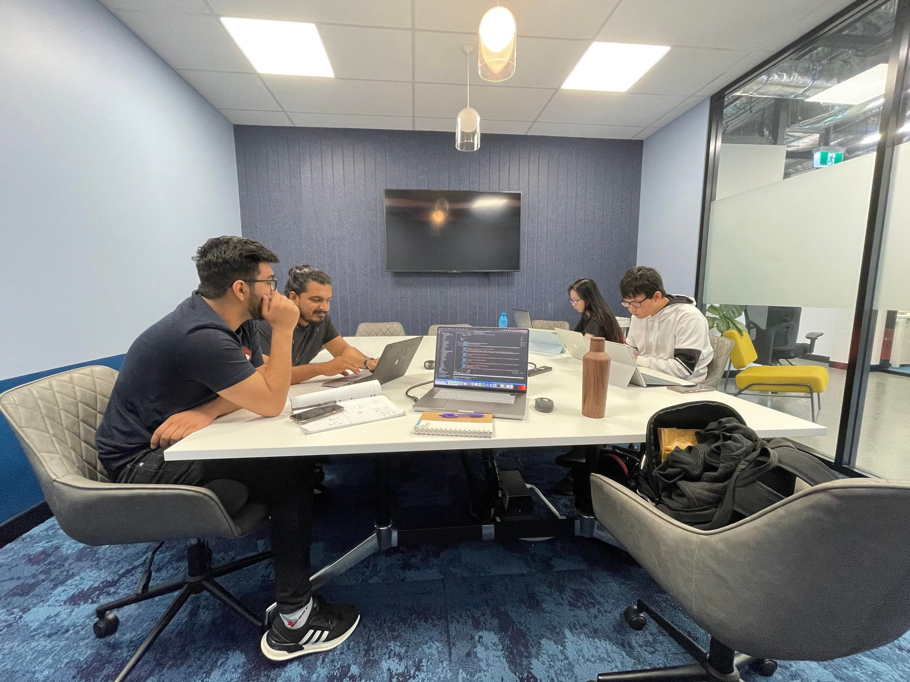

The DIEP framework was used to structure this reflection!
My work placement took place in Securestack company which is one of the top 20 cybersecurity startups to watch in 2021. The whole placement had to be completed by week 12 of this trimester. To complete this medium size project in a short period of given time, 4 students were engaged in this project from the frontend to the backend of web design. My role was to build penetration testing logic and tools for the backend design using Python programming language. During the placement, I encountered professional challenges in transferable skills as I tried my best to complete each task I was assigned, but I somehow ended up doing the wrong things. The things that my supervisor did not expect me to do. For example, there was a time when my supervisor expected me to use an API to complete a task, but I wrote a code to complete that task from scratch instead. It was a waste of time. In addition, there was also a time that I changed my code variable names and did not inform my team members about it, and because of that, I crushed the whole system. I knew I needed to change my attitude, and I went to talk with my supervisor and ask him for some advice and feedback. He told me that he acknowledged my coding skills, but my communication skill was the problem in this industry, and he hoped I could improve it throughout the placement.
Having discussed my issue with my supervisor at Securestack, I clearly understood that good communication skill was very important for my future career as an IT practitioner because if I could not get what my client wanted me to do, I would end up giving a wrong product to the client in the future, and this might lead to a project fail. Moreover, If I could not build a good communication with my team members, it was unlikely that I could finish the project smoothly. Since then, I tried my best to build good communication with them and to improve my range of words related to computer science so that I would not misunderstand what my supervisor wanted me to complete again. If only I tried to clarify each task that I was assigned from the beginning, I would not waste a lot of time and work in the wrong direction. On the other hand, I could have brought the team members together and encouraged each of us to share ideas and speak openly to figure out how we could develop solutions to our coding problems as well as discussing about any changes that we made in our code.
After I changed my attitude, I could see that my work performance improved significantly as a team that was what my supervisor wanted to see. Before, I used to think that teamwork was not an effective way to complete projects. It was not something that I had previously liked to practise in class because I had more control over my projects if I did them alone. However, this placement experience has changed my perception of teamwork and helped me to understand why it is so important to work as a team to achieve the goal. From working within a team, I think that good communication in this industry underpins almost everything that an IT professional does, and it can determine the quality of products that customers will receive as well. Personally, I feel that the experience that I gained and learnt from working with Securestack is priceless because I got the opportunity to work in one of the top cybersecurity companies which allowed me to understand what skills an IT professional should have when he/she enters the industry. I think the whole procedures of this placement were brilliantly organised by Securestack to help the intern students to break the gap between the theoretical knowledge that were taught in class and the real-life Software Development Life Cycle.
The advice that I have learnt from my supervisor is very important for me in many areas as it will open a path and guide my way to become a competent software developer. Soft skill like communication is what I must have in my profession as a developer because I am going to use it a lot with clients and other people as a team after I graduate. To improve what I have learned from Securestack in the future, I usually spend two hours every morning learing new skills which include technical and transferable skills. In addition, I plan on joining ACS Australia where I can continue to develop my skills and build networks with other senior developers which is also very beneficial to my future professional life.